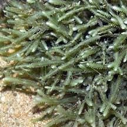
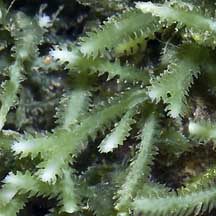
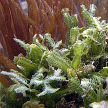
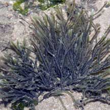
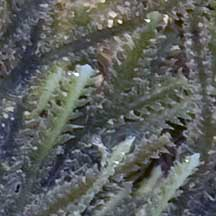
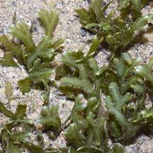
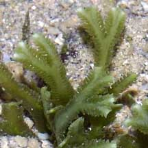

|
|
| green seaweeds text index | photo index |
| Seaweeds > Division Chlorophyta > Family Caulerpaceae > genus Caulerpa |
| Zipper
green seaweed Caulerpa cupressoides* Family Caulerpaceae updated Oct 2016 Where seen? This toothy green seaweed is commonly seen on some of our shores, usually in a small clump on coral rubble. Features: Zipper-like structure 4-6cm long. The mid-rib or central 'stem' may be cylindrical or flat, narrow or relatively broad. The side 'branches' usually very short, flat and have pointed tips. Thus it looks somewhat like a zipper! May be long and slender, or short and very broad. The central stem may branch at the tips to form Y-shapes. These structures emerge along the length of a 'stem' that creeps over hard surfaces or just under the sand. Dark to olive green, sometimes bluish green. Sometimes confused with similar green seaweeds. Here's more on how to tell apart some green seaweeds. Human uses: Zipper seaweed is reported to be edible, to have antibacterial and antifungal properties, and used to treat high blood pressure. However, some Caulerpa species produce toxins to protect themselves from browsing fish. This also makes them toxic to humans. Its scientific name 'cupressoides' means 'cypress-like' or 'resembling cypress'. |
 Pulau Sekudu, Jun 05   Terumbu Semakau, May 10 |
|
 Chek Jawa, Aug 05  |
 Pulau Sekudu, Sep 07  |
 Sentosa, Jun 04  |
*Species are difficult to positively identify without close examination of internal parts.
On this website, they are grouped by external features for convenience of display.
| Zipper green seaweeds on Singapore shores |
| Photos of Zipper green seaweeds for free download from wildsingapore flickr |
| Distribution in Singapore on this wildsingapore flickr map |
| Other sightings on Singapore shores |
Links
|